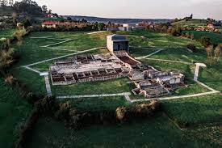
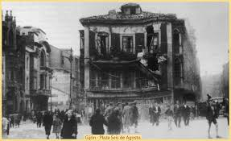

Gijón (en asturiano Xixón) es una ciudad española con la categoría histórica de villa. Es el único núcleo de población de la parroquia del mismo nombre. Su concejo —denominación que reciben los municipios en el Principado de Asturias — es el más poblado de la comunidad autónoma, con 267 706 habitantes en 2022.
Geográficamente, la ciudad y su término municipal se localizan junto a una bahía en la zona central de Asturias, a 28 km de Oviedo y 26 km de Avilés. Allí forman parte de una gran área metropolitana que abarca veinte concejos de la región. Esta área, vertebrada por una densa red de carreteras y ferrocarriles, contaba con una población de 835 053 habitantes en 2011, los cuales la convierten en la séptima de España. En la península ibérica, la villa y el concejo se sitúan en la parte central de la cornisa cantábrica y, a escala europea, en la zona sur del Arco Atlántico.
Desde su fundación en época romana, el desarrollo del núcleo urbano ha estado vinculado al de su puerto, que actualmente es líder en movimientos de graneles sólidos en España. Hasta fechas recientes, Gijón tuvo un carácter eminentemente industrial, lo que favoreció su gran crecimiento de los siglos xix y xx. No obstante, durante las últimas décadas, la crisis de la siderurgia y el sector naval han llevado a la reconversión de su tejido productivo, transformando la ciudad en un centro turístico, universitario, comercial y de I+D+i. Así, además de contar con una red municipal de museos, alberga la Milla del Conocimiento Margarita Salas. Esta comprende el complejo cultural de la Universidad Laboral, un campus universitario y un parque científico y tecnológico.
La ciudad es conocida por antonomasia como «capital de la Costa Verde» y es asimismo capital de la provincia marítima de Gijón. Por el concejo discurre el Camino de Santiago en su ruta costera y en él tienen su sede el Consejo Consultivo del Principado de Asturias la Radiotelevisión del Principado de Asturias y el Centro de Seguridad Marítima Integral de Salvamento Marítimo.
Toponimia
El origen del nombre de Gijón suscita desde hace tiempo un intenso debate entre los estudiosos. En fecha tan temprana como 1899, Miguel de Unamuno emitió ya su opinión, según la cual la palabra provendría del latín saxum «peñasco», lo cual tendría relación con las características geográficas del emplazamiento de la ciudad, cuyo núcleo primitivo se asentó en el gran promontorio que hoy se denomina Cerro de Santa Catalina y en el que se ubica el casco histórico de Cimadevilla. Otras interpretaciones de la época buscan el origen del término en voces celtas como:
- gy: «agua» + om: «rodeada» (según Bullet)
- hitón: «gran hito» u »obra maestra» (según Uría)
- egi + gon: «sitio estrecho y recogido, alto y bueno» (según Becerro de Bengoa).
Basándose en el primitivo carácter de Gijón como asentamiento militar, Sánchez propone la palabra sessio, que aparece en expresiones como sessio legionis o in sessione legionum, teoría que reforzaría la presencia de unas «aras sestianas» o «aras sessianas» que algunos autores sitúan en la Campa Torres y Sánchez interpreta como «aras de la sessio» o «aras sessianas», es decir, «aras gijonesas». Otras explicaciones han buscado el origen del término en antropónimos como gegionus, gegion, segius (según Manzanares); sassonius (según Schulze) o hipotéticos *iaionus, *ieionus (según García Arias). Por otra parte, según sostiene el filólogo Xosé Lluis García Arias, la enormemente popular identificación de Gijón con la Gigia, citada por Ptolomeo, en realidad no tendría nada que ver con la urbe asturiana sino que correspondería a una población situada en lo que hoy es territorio leonés, quizá próxima al río Cea. También cabe suponer que puesto que la ciudad fue fundada por la Legio VII Gemina deba de ahí su nombre.
Oficialidad
El Estatuto de Autonomía del Principado de Asturias prevé la protección, uso y promoción de la lengua asturiana en la comunidad autónoma. La Ley 1/1998, de 23 de marzo, de uso y promoción del bable/asturiano desarrolló la anterior norma y dispuso que los topónimos de la región tendrían la denominación oficial en su forma tradicional. Posteriormente, y siguiendo los pasos descritos por el Decreto 98/2002, de 18 de julio, por el que se establece el procedimiento de recuperación y fijación de la toponimia asturiana, el Gobierno de la comunidad autónoma oficializó los nombres vernáculos de todos los núcleos de población del concejo de Gijón. Así, por ejemplo, el topónimo de la capital municipal pasó a ser bilingüe: «Gijón/Xixón». No obstante, el Decreto 98/2002 indica que para la alteración de la denominación de los concejos deberá tramitarse un expediente conforme a lo dispuesto en la Ley 7/1985, de 2 de abril, reguladora de las Bases del Régimen Local. Según esta última norma, los cambios de denominación de los municipios españoles solo tendrán carácter oficial cuando se publiquen en el Boletín Oficial del Estado. Dado que esto aún no ha sucedido para Gijón, a día de hoy el nombre castellano es el único oficial para el concejo.
Simbolos
El escudo de Gijón, de cuyo uso se tiene constancia desde 1649, representa a Don Pelayo , primer rey de Asturias, sosteniendo una espada en su mano derecha y la Cruz de la Victoria prolongada con un báculo en la mano izquierda. La leyenda vincula a Don Pelayo con Munuza, quien fuera gobernador musulmán de Gijón y con quien entró en lucha ofendido por el matrimonio no consentido entre el gobernador y la hermana de este. Preside el conjunto la corona real española.
La bandera de Gijón es rectangular, de un largo igual a tres medios su ancho, blanca, tiene un ribete rojo en sus cuatro lados de un ancho equivalente a un sexto de su largo y lleva el escudo municipal en el centro en versión polícroma. Tiene su origen en la matrícula asignada a la provincia marítima de Gijón por el Gobierno de España ―Real Decreto de 30 de julio de 1845―.
Geografia
Gijón está situado en el centro de la costa cantábrica del Principado de Asturias, España, en el suroeste de Europa, al norte de la península ibérica, sobre una rasa litoral en las estribaciones de la cordillera Cantábrica. Forma parte de la vertiente hidrográfica cantábrica y se sitúa en su punto más alto (Pico Cima) a 737 m s. n. m.. El punto más alto de la zona urbana (Ceares) se sitúa a 59 m s. n. m.. El término municipal de Gijón tiene una superficie de 182,1 km² y una forma vagamente rectangular. La ciudad, que ocupa una superficie aproximada de 13,9 km², está situada en el tramo costero central del concejo, en una bahía dividida por el Cerro de Santa Catalina (Cimadevilla) que separa la playa de San Lorenzo al este, del Puerto Deportivo, playas de Poniente y Arbeyal, astilleros y puerto de El Musel, al oeste.
El término municipal de Gijón limita con los siguientes concejos: Carreño al noroeste, Corvera al oeste, Llanera al suroeste, Siero al sur y Villaviciosa al este. Con Sariego sus límites llegan a unirse en un pequeño punto correspondiente a la Peña de los Cuatro Jueces, así llamada por constituir la confluencia de los concejos de Gijón, Villaviciosa, Sariego y Siero.
| Noroeste: Carreño | Norte: Mar Cantabrico | Noroeste: Mar Cantabrico |
| Oeste: Corvera de Asturias | Este: Villasviciosa | |
| Suroeste: Llanera | Sur: Siero | Sureste: Sariego |
Hidrografia
Gijón forma parte de la vertiente hidrográfica cantábrica. Los ríos más destacables del concejo son el río Aboño y el río Piles. El río Aboño es el de mayor tamaño y caudal. Nace en el Alto de la Miranda (Llanera) y desemboca en el límite entre el concejo de Gijón y el de Carreño formando así la ría de Aboño, fuertemente industrializada en las últimas décadas. Este río se encuentra embalsado a la altura de San Andrés de los Tacones, al oeste del concejo al lado de la autopista A-66, y sirve de abastecimiento de la empresa ArcelorMittal. El principal afluente del Aboño es el río Pinzales, de similar importancia hidrológica. El Pinzales nace en el concejo de Siero y atraviesa el concejo de Gijón de sur a norte. El río Piles, de gran importancia por atravesar parte del casco urbano de la ciudad, es un río corto y de caudal escaso cuyos 10 o 15 kilómetros transcurren íntegramente dentro de los límites del municipio, atravesando la parte este de la ciudad hasta desembocar en la playa de San Lorenzo. Existen otros arroyos menores (Peña Francia, Santurio, San Miguel, Tremañes, Cutis, Pilón, etc), de los cuales el más importante es el de La Ñora, que forma un tramo de la frontera con el concejo de Villaviciosa y desemboca en la playa del mismo nombre.
Clima
El clima de Gijón, determinado por la presencia del mar y la baja altitud del concejo, es un clima oceánico, con abundantes precipitaciones desde el otoño hasta los primeros días de la primavera, y un tiempo más estable y cálido en verano. Según los datos ofrecidos por la Agencia Estatal de Meteorología para la estación meteorológica de Gijón (período 1971-2000), la media del mes más frío (enero) fue de 8,9 °C, la media del mes más cálido (agosto) fue de 19,7 °C y la temperatura media anual es de 13,8 °C (media anual de máximas: 17,6 °C; media anual de mínimas: 9 °C). La nieve cubre ocasionalmente en el invierno los montes del concejo que rodean la ciudad y llega de forma esporádica al centro de la ciudad, con una media de un día de nieve anual.
| Parametros climaticos promedio de gijon | |||||||||||||
|---|---|---|---|---|---|---|---|---|---|---|---|---|---|
| Mes | Ene | Feb | Mar | Abr | May | Jun | Jul | Ago | Sep | Oct | Nov | Dic | anual |
| Temp.max.abs.(ºC) | 23.6 | 23 | 27 | 28 | 31.8 | 36.4 | 31.4 | 30 | 34.6 | 30.4 | 26.1 | 25 | 36.4 |
| Temp. máx. media (°C) | 13.1 | 13.8 | 14.9 | 15.6 | 17.8 | 20.2 | 22.4 | 23.2 | 21.8 | 19.0 | 15.6 | 14.0 | 17.6 |
| Temp. media (°C) | 8.9 | 9.6 | 10.7 | 11.8 | 14.3 | 16.9 | 19.2 | 19.7 | 17.9 | 15.0 | 11.6 | 9.9 | 13.8 |
| Temp. mín. media (°C) | 4.7 | 5.4 | 6.6 | 8.1 | 10.9 | 13.6 | 16.0 | 16.2 | 14.1 | 11.0 | 7.6 | 5.8 | 10.0 |
| Temp. mín. abs. (°C) | -9.6 | -6.0 | -3.0 | -1.4 | 2.2 | 5.8 | 5.6 | 5.2 | 4.7 | 2.6 | -3.4 | -6.8 | -9.6 |
| Precipitación total (mm) | 94 | 85 | 74 | 93 | 79 | 47 | 45 | 54 | 70 | 104 | 120 | 104 | 971 |
| Días de precipitaciones (≥ 1 mm) | 12 | 11 | 10 | 12 | 11 | 7 | 6 | 7 | 8 | 11 | 12 | 12 | 121 |
| Horas de sol | 103 | 109 | 137 | 151 | 167 | 180 | 194 | 190 | 158 | 132 | 106 | 92 | 1721 |
| leyenda temperatura | leyenda precipitaciones | dias de lluvia | Horas de luz |
| -10-0 | 0-50 | 0-10 | |
| 0-10 | 50-80 | 10+ | |
| 10-20 | 80-110 | ||
| 20-30 | 110+ | ||
| 30+ |
Historia
Prehistoria
Los más antiguos testimonios de presencia humana en lo que hoy conocemos como concejo de Gijón datan del Mesolítico y consisten en instrumentos de piedra llamados «picos asturienses», hallados en la desembocadura del río Piles y en Tremañes. Estas herramientas permitían arrancar de las rocas moluscos como las lapas, los cuales formaban parte de la dieta de los primeros habitantes de la zona.
Más adelante, en el Neolítico, se construyeron en el Monte Deva una serie de túmulos (primitivos enterramientos) y en el Monte Areo un conjunto dolménico considerado como uno de los más importantes de la costa Cantábrica. En 1990, unas prospecciones arqueológicas permitieron sacar a la luz 30 dólmenes, repartidos en dos sectores diferentes: Los Llanos y Les Huelgues de San Pablo, que según algunos expertos están agrupados en un «cierto orden monumental». Sucesivas campañas arqueológicas han permitido el estudio de un túmulo en el área de San Pablo y otros dos en la zona de Los Llanos. De tipología diferenciada, dos de ellos presentan cámaras de planta rectangular y otro, trapezoidal con un pequeño corredor precediéndolo. Este último es un caso interesante, ya que no es frecuente encontrar dólmenes de corredor en el área del Cantábrico. Este conjunto dolménico está datado en el 5000 a. C. Estos monumentos megalíticos indicarían que en el actual concejo gijonés existía una importante población fija, que tenía como objetivo la demarcación del territorio que cada uno consideraba propio.
Edad antigua
No se tienen noticias de asentamientos permanentes en el concejo hasta la aparición de los castros. El más conocido de estos poblados fortificados es el situado en la Campa Torres (Noega) con su origen en los siglos vi y v a. C., poblado por astures de la gens de los cilúrnigos y posteriormente romanizado al tratarse de un perfecto candidato para acoger temporalmente efectivos militares tras la conquista. En cambio, algunos autores opinan que debió existir algún tipo de población de carácter autóctono en el lugar que ocupa actualmente la ciudad, aunque no existen datos fidedignos que apoyen estas suposiciones.
El castro de Noega fue progresivamente abandonado como consecuencia de la fundación en el siglo I d. C. de un nuevo asentamiento romano a los pies del Cerro de Santa Catalina, en el actual barrio de Cimadevilla. Este se convirtió en un importante puerto estratégico en la ruta marítima del Cantábrico y un centro regional o caput ciutatis que alcanzó su esplendor en el Bajo Imperio. Las investigaciones arqueológicas realizadas en el casco urbano a partir de la década de 1980 han descubierto y documentado los restos de termas (siglo I a II d. C.), murallas (siglo III a IV), viviendas, aljibes y una fábrica de salazones, entre otros hallazgos. Entre los vestigios de ocupación romana encontrados en el concejo destaca una gran villa del siglo iv en Veranes que conserva la parte residencial o pars urbana y la de servicios o pars rustica
Edad media y moderna
Tras la romanización hubo una época muy oscura, la cual transcurrió desde el fin del control romano hasta la llegada de los musulmanes. De hecho, el paso a la época medieval estuvo marcado por la pérdida progresiva de las funciones urbanas provocado por el colapso de la civilización romana. Las construcciones romanas son reaprovechadas para nuevas funciones. Así, se ha documentado el uso del complejo termal como lugar de habitación y de espacio funerario asociado a la iglesia de San Pedro y en la zona rural del concejo la villa de Veranes fue reconvertida en iglesia y cementerio y la de Beloño en fortificación
Gijón fue capital de los dominios transcantábricos musulmanes bajo mando del bereber Munuza, quien fijó aquí su residencia y puso destacamentos de tropas. También situó asentamientos militares en algún otro punto clave, pues un alto número de tropas habían cruzado el estrecho. El resto de la región, en cambio, gozó de mayor autonomía. La dominación duró aproximadamente desde el año 713 hasta el 718 o 722. En este último año se produjo la victoria de los dirigentes asturianos en la batalla de Covadonga, iniciada en el 718 y liderada por Pelayo quien se convertirá en rey del reino de Asturias.
En el año 1147 un gran grupo de guerreros cruzados hicieron una parada en el puerto de Gijón. Habían salido de Dartmouth con el objetivo de conquistar Tierra Santa y fueron sorprendidos por un temporal en el mar Cantábrico. En un documento en el que cuentan estos hechos llaman a la ciudad Mala Rupis, que en latín significa «peña mala», tal vez por su aspecto poco accesible
El siglo xiv, época en la que el poder de la nobleza alcanza su máximo, estuvo marcado por una lucha dinástica tras la muerte de Alfonso XI. Se trata de una guerra entre Pedro I el Cruel, descendiente legítimo, y el bastardo Enrique de Trastámara. En los años siguientes Gijón fue centro de luchas entre el conde Alfonso Enríquez y Enrique III, en las que fue cercada, incendiada y arrasada durante un duro sitio en 1394, para terminar desapareciendo como centro urbano. Otras fuentes, sin embargo, opinan que se produjo un estancamiento y regresión en el crecimiento del núcleo urbano sin llegar nunca al abandono. Como consecuencia, durante este periodo la zona rural del concejo adquirió bastante importancia, localizándose la población diseminada por el campo al amparo de iglesias y monasterios construidos en estilo románico, y levantándose asimismo algunas fortalezas. Un ejemplo notable de estas últimas construcciones es el desaparecido castillo de Curiel, que servía para controlar el paso desde el centro de la región a la villa gijonesa. Aún hoy se conservan vestigios de esta época, destacando la torre de la familia Valdés —conocida popularmente como el Turruxón de Trubia— y las iglesias de San Miguel de Dueñas en Bernueces y de San Juan Bautista en Cenero.
No fue hasta los siglos xv y xvi cuando Gijón empezó a desarrollarse de nuevo. Esto es debido a las mejoras realizadas en su puerto, donde se construyó una dársena que incrementó el tráfico de pesca y el comercio de subsistencia.
En los siglos xvii y xviii Gijón experimentó un gran desarrollo que hizo que su núcleo urbano se expandiese. Esto fue debido al Reglamento de libre comercio de 1778, que habilitó el puerto para el comercio con las colonias americanas. Se convirtió de esta forma en el único en Asturias habilitado para tal fin, siendo además la vieja dársena mejorada y ampliada tras su destrucción por una tormenta. Gracias a ello, a la mejora de las comunicaciones con la Meseta y a la creación del Instituto Asturiano, durante el siglo xviii Gijón alcanzó una población muy próxima a los 5500 habitantes. En esta época la figura de Gaspar Melchor de Jovellanos jugó un papel clave, pues aparte de promover la creación del instituto y otras obras, fue quien marcó las líneas de expansión de la ciudad en su «Plan de Mejoras», pionero de los planes de ensanche
Edad contemporanea
Industrializacion y desarrollo burgués
A principios del siglo xix la localidad se dividía en los barrios de Cima de Villa y Bajo de Villa. En el nuevo espacio urbano podían distinguirse tres partes: el arrabal de La Rueda o barrio del Carmen —al pie de la dársena—, el Humedal —en el límite suroccidental, construido sobre unas marismas desecadas— y el ensanche jovellanista. Este conjunto quedó rodeado en 1836 por una cerca militar construida con motivo de la primera guerra carlista.
En la segunda mitad del siglo Gijón experimentó un gran desarrollo debido fundamentalmente a la industrialización. De hecho, el crecimiento demográfico fue tal que la villa pasó de 10 000 habitantes en 1857 a 27 000 habitantes en 1900. Un antecedente de este proceso fue la instalación en 1836 de la fábrica de cigarros en el antiguo convento de las Agustinas en Cimadevilla. El proceso de crecimiento se aceleró en los años siguientes por diversos factores, como la explotación del carbón en las Cuencas Mineras y la construcción de nuevas infraestructuras. Destacan la carretera a León y la Carretera Carbonera a Langreo. Esta última, inaugurada en 1842, fue la primera carretera de peaje de España. Los elevados costes que generaba motivaron la búsqueda de otros medios de transporte para el carbón. Como resultado, en 1852 se inauguró el Ferrocarril de Langreo el primero en circular por Asturias
Todo esto hizo de Gijón una villa industrial en la cual la burguesía desempeñó un papel muy importante en el desarrollo urbano, creándose nuevas calles y plazas bien a través de reformas interiores en el casco histórico, bien a través de planes de ensanche para promover la expansión de la ciudad. El proyecto de ensanche sobre el arenal de San Lorenzo se aprobó en 1867 y fue proyectado en terrenos en propiedad del primer marqués de Casa Valdés, al este de la villa. La trama ortogonal entonces creada, que comienza en la plaza de San Miguel y termina en la Avenida de Castilla, dio origen al actual barrio de La Arena
Entre finales del siglo xix y comienzos del xx la consolidación de una pujante burguesía propició un nuevo modelo de urbanismo. Los miembros de esta clase social impulsaron la construcción de edificios residenciales de mayor superficie y fachadas llamativas —algunos de ellos influenciados por el modernismo o art nouveau—, además de los equipamientos que exigían sus relaciones sociales y comerciales. Algunos ejemplos ya desaparecidos eran el antiguo teatro Jovellanos, el teatro-circo Obdulia o el Gran Hotel Malet —donde se alojaba Isabel de Borbón, La Chata—. Aún siguen en pie la plaza de toros de El Bibio y el teatro Dindurra, actual teatro Jovellanos. Los arquitectos Miguel García de la Cruz y Manuel del Busto tuvieron una gran relevancia en cuanto a número de obras en la ciudad
El urbanismo burgués contrastaba notablemente con las viviendas y condiciones de vida precarias de los más desfavorecidos dentro de la clase obrera. Un gran número de estas personas vivía en las conocidas como «ciudadelas», grupos de pequeñas casas unifamiliares de muy baja calidad distribuidas en hileras opuestas y con servicios comunes a todas ellas. Estas se construían sin licencia municipal en el patio interior de las manzanas y se ocultaban tras otros edificios o al fondo de un callejón. De entre todas ellas destaca la de la calle Capua, actualmente convertida en museo. Con el cambio de siglo también aparecieron las primeras parcelaciones por iniciativa particular. Consistían en un trazado de calles sobre fincas rústicas comunicadas con el casco urbano mediante una vía de acceso. Estas formaban una corona alrededor de la ciudad histórica, el ensanche y las zonas industriales de El Natahoyo y La Calzada. El suelo del ensanche de San Lorenzo, demasiado caro para la demanda menos solvente, tardaría en ocuparse. Entre todas las parcelaciones destacó la primera de ellas en el Coto de San Nicolás, situada al sur del ensanche.
Revolucion de 1934 y Guerra Civil
En la revolución de 1934, la CNT convocó una apresurada huelga general el 4 de octubre y esperó con ansias la traída de armas y dinamita desde las Cuencas Mineras, epicentro de la revolución. Sin embargo, el armamento nunca llegó, posibilitando que la Guardia Civil y la Guardia de Asalto tomaran posiciones en la ciudad. Los revolucionarios montaron barricadas, especialmente en El Llano, y con poco material intentaron tomar la casa consistorial el 8 de octubre, provocando que el crucero Libertad bombardeara Cimadevilla. La revolución fue aplastada y sus líderes ejecutados, detenidos o exiliados. Esta desincronización y falta de preparación por parte de la CNT no volvería a ocurrir en el golpe de Estado de julio de 1936.
En febrero de 1936 Avelino González Mallada, de la CNT, arrasó en las elecciones municipales. Con el estallido de la Guerra Civil el 18 de julio de 1936, la ciudad quedó controlada por el bando republicano debido a la anticipación del gobierno municipal. Se formó el Comité de Guerra de Gijón, de preponderancia anarquista. Por su parte, el ejército, concentrado en los cuarteles de Simancas y El Coto, se unió al alzamiento tras una entrevista del coronel Aranda —posterior defensor del sitio de Oviedo— y el general Pinilla —comandante de las divisiones en Gijón—. La sublevación en sí comenzó el 20 de julio, siendo los sublevados sorprendidos por la organización de milicianos y locales, que concentraron sus esfuerzos contra el cuartel de Simancas mediante un duro asedio. El buque sublevado Almirante Cervera intentaría apoyar a los militares bombardeando la ciudad entre el 29 de julio y el 9 de agosto, provocando la destrucción de edificios y pánico entre la población. La respuesta miliciana contra el golpe de Estado incluyó la destrucción de templos en la ciudad y en especial en su zona rural, así como persecución y ejecuciones a civiles. Las tropas del general Pinilla sucumbieron a mediados de agosto, concluyendo el asedio. Posteriormente la villa fue la capital del Consejo Interprovincial de Asturias y León, que se acabaría declarando soberano y se convertiría en el Consejo Soberano de Asturias y León. Las tropas nacionales continuaron hostigando la ciudad; no habría batalla directa aunque sí continuos bombardeos, como los de la Legión Cóndor contra el puerto de El Musel y la ciudad en agosto de 1937. Gijón se fortificó con refugios antiaéreos (la mayoría improvisados en sótanos aunque destaca el excavado en Cimadevilla) e incluso construyó un aeródromo en Las Mestas. Finalmente, la ocupación de la ciudad por las tropas franquistas tuvo lugar el 21 de octubre de 1937.
Franquismo
Durante la posguerra hubo en Gijón una grave situación de déficit de vivienda. Hacia la mitad del siglo comenzaron a tener efecto diferentes propagandas dirigidas a incrementar la construcción por iniciativa tanto pública como privada. Así, además de solucionar el problema de falta de vivienda, se intentaba fijar trabajadores donde era necesaria fuerza de trabajo y difundir una ideología que celebraba las virtudes de la propiedad privada y la paz social. Sin embargo, esto fue dando lugar a numerosos grupos de viviendas construidos fuera del perímetro urbano o en suelo previsto como industrial, alterando gravemente la planificación urbanística de la ciudad y marcando su desarrollo en las décadas siguientes. En 1958 surge el polígono de Las Mil Quinientas, germen del barrio de Pumarín. Los barrios de El Llano y La Calzada fueron los de mayor crecimiento, siendo muy importante la llegada de inmigrantes desde Extremadura, Andalucía y Castilla entre otras regiones. Como resultado, en la década de 1950 y sobre todo en la de 1960 la ciudad experimentó su mayor desarrollo, superando por primera vez en población a Oviedo.
Es también en esta época cuando se creó la Feria Internacional de Muestras de Asturias que en 1963 se convirtió en el escaparate de la técnica, la industria, la ingeniería, el turismo y el comercio de la región. Desde 1966 se celebra en el Recinto Ferial Luis Adaro.
La siderurgia, principal industria desde finales del siglo xix, se volvió especialmente importante en la década de 1970. En 1971 surgió UNINSA como resultado de la fusión de las fábricas de Moreda-Gijón, Mieres y Duro-Felguera. La concentración de la actividad siderúrgica en Gijón y Avilés hizo que la ciudad comenzase a recibir población de las Cuencas Mineras, que antes albergaban este tipo se industrias. El efecto multiplicador que UNINSA fomentó en otros sectores tuvo igualmente como consecuencia un rápido desarrollo. El gran incremento de la población ―de 121 000 en 1961 a 237 200 en 1975― creó una gran presión especulativa sobre la construcción. Esto trajo consigo la construcción de edificios cada vez de mayores alturas —especialmente en la zona cercana a la playa de San Lorenzo y en los terrenos de la fábrica de vidrios de Begoña— y la falta de equipamientos y servicios urbanos en zonas periféricas de la ciudad —El Natahoyo, La Calzada, Pumarín y Contrueces—.
Desindustrializacion y reconversion economica
Las últimas décadas del siglo xx trajeron consigo una crisis industrial que afectó sobre todo a la siderurgia y al sector naval al igual que al resto de la industria asturiana, especialmente la minera. A partir de la crisis de 1973, y en especial con los objetivos del Gobierno de España para entrar en la CEE entre 1982 y 1986, la reconversión industrial ocurrió en toda la región. En Gijón únicamente en 1982 se cerraron 71 empresas. ENSIDESA, empresa que había absorbido a UNINSA, efectuó recortes de plantilla. Más adelante, junto a Altos Hornos de Vizcaya, se convirtió en Aceralia y a finales del siglo xx se integró en el grupo europeo Arcelor junto a la luxemburguesa Arbed y la francesa Usinor, absorbidas en la actualidad por Mittal Steel. La industria naval se unificó en Naval Gijón en 1985 y la industria textil prácticamente desapareció en 1990. En 1987 se alcanzó el récord histórico de desempleo, que afectaba a un 26 % de la ciudad
En 1986 se activó un Plan General de Ordenación Urbana que saneó varias hectáreas del barrio de El Llano.
Fue el primero de varios planes urbanísticos que dignificaron zonas marginales como La Calzada y Tremañes o reformularon barrios industriales como El Natahoyo.
Con la ayuda de estos cambios y de la recuperación de la economía gijonesa a la par que la española a mediados de los 1990, Gijón se reconvirtió en una ciudad orientada al sector servicios.
En el año 1990 se iniciaron las transformaciones que acompañaron a esta nueva etapa con la conversión en parque público de las instalaciones militares del Cerro de Santa Catalina, en Cimadevilla.
Se inauguró allí la escultura Elogio del Horizonte de Chillida.
En esta década se emprendió además un ambicioso proyecto de edificaciones públicas a partir del derribo de buena parte del Gijón industrial.
La desaparición de industrias portuarias dejó espacio para nuevas playas (
La desindustrialización continuó en los 2000 afectando a las industrias medianas de la ciudad, como la mina de La Camocha, cerrada en 2008. En esta época se crearon asimismo nuevos barrios como Montevil, Viesques y Nuevo Roces. En la zona este de la ciudad fueron apareciendo los equipamientos que ahora conforman la Milla del Conocimiento Margarita Salas. Estos son el campus universitario, el Parque Científico Tecnológico y la remodelación y acondicionamiento de la Universidad Laboral bajo la marca Laboral, ciudad de la cultura
Administracion y politica
Gobierno municipal
La ciudad recibe en 1979 a la democracia eligiendo a José Manuel Palacio como alcalde. Este continuó en el cargo hasta 1987, cuando es relegado por Vicente Álvarez. En las elecciones municipales de 1999 Álvarez fue sustituido por Paz Fernández Felgueroso y en 2011 esta fue relegada por Carmen Moriyón, primera alcaldesa ajena al PSOE. El 15 de junio de 2019 la ciudadanía elige a una nueva alcaldesa del PSOE. Desde entonces Ana González gobierna en minoría gracias a los votos a favor de Izquierda Unida en el pleno de investidura. Su mandato no se prolongará a partir de las elecciones de 2023
Desde la instauración de la democracia en la Transición, la fuerza política que más tiempo ha gobernado en Gijón ha sido el PSOE, que gobernó de forma ininterrumpida durante 32 años, entre 1979 y 2011.
| Periodo | Nombre | Partido |
|---|---|---|
| 1979-1983 | José Manuel Palacio Álvarez | Federación Socialista Asturiana (FSA-PSOE) |
| 1983-1987 | José Manuel Palacio Álvarez | Federación Socialista Asturiana (FSA-PSOE) |
| 1987-1991 | Vicente Alberto Álvarez Areces | Federación Socialista Asturiana (FSA-PSOE) |
| 1991-1995 | Vicente Alberto Álvarez Areces | Federación Socialista Asturiana (FSA-PSOE) |
| 1995-1999 | Vicente Alberto Álvarez Areces | Federación Socialista Asturiana (FSA-PSOE) |
| 1999-2003 | Paz Fernández Felgueroso | Federación Socialista Asturiana (FSA-PSOE) |
| 2003-2007 | Paz Fernández Felgueroso | Federación Socialista Asturiana (FSA-PSOE) |
| 2007-2011 | Paz Fernández Felgueroso | Federación Socialista Asturiana (FSA-PSOE) |
| 2011-2015 | María del Carmen Moriyón Entrialgo | Foro Asturias (FAC) |
| 2015-2019 | María del Carmen Moriyón Entrialgo | Foro Asturias (FAC) |
| 2019- | Ana González Rodríguez | Federación Socialista Asturiana (FSA-PSOE) |
Economia
Ciudad tradicionalmente industrial, la economía de Gijón ha sufrido grandes cambios a partir de las duras reconversiones del sector industrial desde la década de los setenta.
El despegue económico de Gijón se inició a finales del siglo xix, debido a la confluencia de varios factores:
-
La explotación del carbón de las cuencas hulleras del interior de Asturias (principalmente en Mieres y Langreo). La construcción del Ferrocarril de Langreo, tercer ferrocarril español, en 1856, hizo de Gijón el puerto de embarque de la mayor parte de la producción minera asturiana, estimulando el comercio y la industria local.
-
La repatriación de capitales antillanos, como consecuencia de la independencia de Cuba, que propiciaron la creación de nuevas industrias e inversiones inmobiliarias.
El modelo industrial generado, típico de la primera Revolución Industrial, constaba por tanto de un fuerte sector secundario, con gran presencia de la industria metálica, siderúrgica, cerámica, vidrio y textil. El sector terciario, además de la actividad comercial generada por la ciudad, incluyó la incipiente actividad turística del Gijón de la época, que también aspiró a convertirse en una gran estación balnearia. Sin embargo no llegó a prosperar lo esperado debido al tardío enlace ferroviario que conectó a Asturias con la meseta.
La siguiente etapa de gran crecimiento económico de Gijón se produjo a finales de la década de 1960, debido a la construcción de la factoría de Uninsa (Ensidesa) y a la actividad del puerto y de los astilleros.
Tras una dura crisis y reconversión en los años ochenta, en la actualidad, el sector terciario es el más importante de la economía gijonesa, seguido del sector secundario (industrias siderúrgicas y metálicas). El peso del sector primario en la economía del municipio es prácticamente irrelevante.
Milla del conocimiento de Margarita Salas
En el este del concejo se sitúa la Milla del Conocimiento Margarita Salas, un conjunto de equipamientos empresariales, públicos, educativos y culturales que suponen una suma de más de 10 000 empleados, 170 empresas y más de 13 000 alumnos, siendo uno de los principales polos económicos de Asturias. Destaca el Parque Científico Tecnológico de Gijón, el Hospital de Cabueñes y el campus de Gijón, de la Universidad de Oviedo.
Centros comerciales de gijon
- Centro comercial Los Fresnos - Avenida del Llano, este centro está situado en un edificio de seis plantas; entre las que se distribuyen un hipermercado, diversas tiendas de moda, un cine (Ocine 9 salas), gimnasio, numerosos restaurantes y locales comerciales y de ocio.
- Centro comercial San Agustín - Plaza Romualdo Alvargonzález, un supermercado y numerosas tiendas y locales de restauración.
- Centro comercial La Calzada - Ocimax Gijón - C/Maestro Amado Morán, s/n, dispone de cines (Yelmo Cineplex 13 salas), restaurantes, hipermercado y diversas cafeterías y locales.
- Centro comercial Costa Verde - Calle Ramón Areces, dos grandes almacenes de El Corte Inglés.
- Centro comercial Centro Histórico, abarca los locales miembros del centro histórico de la ciudad.
- Centro comercial Opción - Calle General Suárez Valdés, tiendas locales, bares, supermercado, gimnasio, piscina y en el exterior, una extensa plaza.
- Centro comercial Abierto de La Calzada - Abarca los diferentes establecimientos (bares, sidrerías, cafeterías, pescaderías, carnicerías, etc.) del barrio.
- Centro comercial Alcampo (hipermercado) - Zona comercial de Roces.
Servicios
Educacion
Colegios e institutos
En Gijón existen 75 colegios donde se pueden impartir Infantil y Primaria y 28 institutos donde se puede cursar ESO y Bachillerato, la mayoría públicos
Estudios superiores
En Gijón se sitúan centros docentes de dos universidades, la Universidad de Oviedo y la Universidad Nacional de Educación a Distancia.
Universidad de Oviedo
El campus de Gijón de la Universidad de Oviedo, que se ubica en las parroquias de Somió, Cabueñes y Bernueces, sobre fincas de la antigua Universidad Laboral de Gijón, incluye los siguientes centros docentes:
- Escuela Politécnica de Ingeniería de Gijón.
- Escuela Superior de la Marina Civil.
- Facultad de Comercio, Turismo y Ciencias Sociales Jovellanos.
- Facultad de Enfermería de Gijón.
Gijón cuenta también con la delegación de la UNED en Asturias, donde se pueden cursar a distancia distintas disciplinas.
Otros estudios
- Escuela Superior de Arte Dramático y Profesional de Danza de Asturias: La ESAD imparte sus clases en la Universidad Laboral desde 2006
- Conservatorio Profesional de Música y Danza de Gijón: Fundado en 1986, está situado en la Universidad Laboral desde 2007 (anteriormente se encontraba en el barrio de El Coto, en el antiguo Cuartel de El Coto), donde se estudian 18 especialidades, entre ellas la gaita (desde 2006). Cuenta con una orquesta sinfónica, banda, orquesta de cuerdas, la LittleBand y la BigBand; además de alrededor de 60 profesores y 600 alumnos
- Escuela Oficial de Idiomas de Gijón: Ubicada en el barrio de El Polígono imparte certificados y clases de inglés, francés y alemán
Sanidad
Gijón pertenece al área V del SESPA junto Carreño y Villaviciosa siendo su hospital principal el Hospital Universitario de Cabueñes. También son relevantes los hospitales concertados de Jove y Cruz Roja así como los privados del Hospital Begoña, Hospital Covadonga y un futuro hospital de Quirón en Nuevo Gijón. En otros edificios destaca la Residencia Mixta en Pumarín, el Centro Sanitario Marítimo, todos los centros de salud ubicados en varios barrios y el gran número de clínicas privadas, algunas con gran prestigio.
Patrimonio
Arquitectura civil
Gijón cuenta con una amplia arquitectura civil, destacando la Universidad Laboral de Gijón (1955) como su edificio más representativo. En su extenso catálogo de patrimonio urbanístico podemos encontrar edificios como el palacio de Revillagigedo, del siglo xviii, la Casa Consistorial (Coello, 1865), la plaza de toros de El Bibio (1888), el Banco de Gijón (Bellido, 1902), la Escuela de Comercio (Del Busto, 1915), Solavieya (1918), La Gota Leche (De la Cruz, 1925), La Escalerona (Fernández-Omaña, 1933), la Casa Rosada (1940), la Casa Sindical (Somolinos, 1966) o el Palacio de Deportes (Arroyo, 1992)
Arquitectura religiosa
En Gijón existen varias iglesias, destacando las tres «históricas»: San Pedro (Somolinos, 1955), San José (Bustelo, 1954) y San Lorenzo (Bellido, 1901). Asimismo, hay una basílica construida en 1918 y apodada La Iglesiona y un santuario, el de Nuestra Señora de Contrueces (1660)
Espacios naturales
- Parque de Los Pericones, el mayor de la villa.
- Cerro de Santa Catalina, con la escultura Elogio del Horizonte, de Eduardo Chillida
- Parque de Isabel la Católica
- Jardines del Tren de la Libertad (conocidos como «El Solarón»)
- Monte Deva
- Playa de San Lorenzo, playa de Poniente, playa del Arbeyal, Mayanes, Cervigón, Peñarrubia, Serín, Estaño y La Ñora
Cultura
La actividad cultural es muy amplia, y hace especial hincapié en la formación pública. Desde 1981 existe una Universidad Popular con talleres y cursos, así como una red de centros sociales y bibliotecas en cada barrio. Tienen especial importancia el Ateneo Jovellanos, institución liberal fundada en 1953 con el impulso del catedrático y político Torcuato Fernández-Miranda, el Ateneo Obrero de Gijón, una entidad cultural con más de cien años de vida, Ateneo de la Calzada, el Antiguo Instituto Jovellanos y un futuro centro cultural en Cimadevilla, la Tabacalera.
Se realizan actividades culturales todo el año, que aumentan considerablemente en los meses de verano, sobre todo en agosto por las fiestas de la Asunción (15 de agosto), con fiestas, música y teatro, que complementan la programación continua del Teatro Municipal Jovellanos Entre los actos consolidados en la ciudad podemos destacar:
- FETEN Feria Europea de Teatro para niños, en febrero.
- L.E.V. Festival · Laboratorio de Electrónica Visual · Festival Internacional de Creación Audiovisual de Gijón, a principios de mayo.
- Feria del Libro de Gijón/Xixon - FELIX, en Junio
- Metrópoli Gijón Festival Media de Cultura y Entretenimiento de Gijón, incluyendo una Cómic-Con, que se celebra a finales de junio en el Recinto Ferial.
- La Semana Negra en julio.
- El Festival aéreo Internacional en julio.
- Festival Arco Atlántico, en julio
- Festival Folclórico Internacional finales de julio.
- Feria Internacional de Muestras de Asturias (FIDMA), en agosto.
- El Festival Internacional de Cine de Gijón a finales de noviembre.
- Encuentro literario La Arribada.
Los centros municipales programan en sus sedes todo tipos de espectáculos, destaca la cita con el jazz que se celebra al menos una vez al mes en el Antiguo Instituto bajo el nombre Jazz en el Centro. Desde 2006, la ciudad cuenta con un coro de voces blancas conocido en toda la región, los Niños Cantores de Gijón, que ofrecen anualmente conciertos de diferentes iglesias y parroquias de la ciudad, tales como San José, Nuestra Señora de Fátima o San Nicolás de Bari entre otros.
Museos
En Gijón existen gran número de museos:
- Historia: En Gijón existen varios museos sobre su propia historia como las Termas romanas de Campo Valdés, la Villa romana de Veranes, el Parque arqueológico de la Campa Torres y la Ciudadela de Celestino Solar; así como otros dos sobre la historia de Asturias: el Museo del Ferrocarril de Asturias y el Museo del Pueblo de Asturias, que incluye el Museo de la Gaita.
- Arte: Hay varios museos que exponen, principalmente, colecciones de un solo pintor: Museo Barjola, Museo Nicanor Piñole y Museo Evaristo Valle así como uno de arte contemporáneo, el centro laboral de Arte y Creación Industrial y otro más generalista, el Museo Jovellanos, cuyos grandes fondos serán expuestos en parte en el museo proyectado de Tabacalera, formando la mayor pinacoteca de la ciudad.
- Naturaleza: Destacan el Jardín Botánico y el Acuario de Gijón, orientados a la flora y fauna cantábrica.
Cine y Teatro
José Luis Garci grabó a principios de la década de 1980 la mayor parte del metraje de Volver a empezar, película que posteriormente obtendría un Oscar de la Academia a la mejor película extranjera. A principios de la década de 1990 hubo un auge de bandas de música indie en la villa, que se conoció como el Xixón Sound. También la comedia La gran aventura de Mortadelo y Filemón fue grabada en parte en la Ciudad de la Cultura de Gijón, conocida como la Universidad Laboral en la parroquia de Cabueñes. En 2006, la ciudad albergó el rodaje íntegro de la película de los hermanos Ulloa, Pudor. Y en 2009, la Laboral y sus alrededores se convertirían en Oxford para la película de Fernando González Molina, Fuga de Cerebros. En 2019 también se rodó en Gijón (concretamente en la Quinta Bauer en Somió, RCAR, calle Corrida y en el bar restaurante El Globo, entre otras localizaciones) la película Si yo fuera rico de Álvaro Fernández Armero para Mediaset y Telecinco.
Asimismo existen en la villa numerosos grupos tanto profesionales entre los que se cuentan a Higiénico Papel, Teatro del Norte, Teatro Margen, Konjuro teatro... así como grupos amateur como Atrebil, Compañía asturiana de comedias, Electra, G con G, La capacha, La Galerna, La Peseta, Rosario Trabanco, Telón de Fondo, Trama y Traslluz. Todos ellos tanto unos como otros conocidos fuera de los límites de la villa, como de la provincia asturiana, recibiendo premios y menciones.
Destacan los siguientes teatros:
- Teatro Jovellanos, teatro construido en 1899 bajo el nombre de Teatro Dindurra. En 1936 sería destruido y abriría en 1942 rebautizado Teatro Jovellanos. En 1995 y 2010 recibe sendas reformas integrales que reafirman al edificio como uno de los máximos exponentes de la cultura pública gijonesa
- Teatro de La Laboral, teatro ubicado en el antiguo auditorio de la Universidad Laboral con extenso programa cultural y capacidad para 2000 personas.
Literatura
Gijón destaca por albergar la Semana Negra, que se celebra anualmente desde 1988, año en que el escritor asturmexicano Paco Ignacio Taibo II la organizó por primera vez, como un acontecimiento cultural que serviría de marco a un encuentro del ejecutivo de la Asociación Internacional de Escritores Policíacos, (AIEP).
Existe también una feria del libro: FELIX (Feria del LIbro de Xixón), que se celebra durante el mes de junio en el Paseo de Begoña y la calle Tomás y Valiente.
Gastronomia
Podemos destacar dentro de la comida clásica, como primeros, les fabes, las reinas en la cocina asturiana, ya sea en la conocidísima fabada asturiana con compango (chorizo, morcilla asturiana y lacón), como con almejas, centollo, con caza, etc y el pote asturiano. En los segundos, el puerto aporta sabrosos pescados y mariscos del Cantábrico con el que se realizan recetas tradicionales como la chopa a la sidra, besugo a la espalda, ventresca de bonito o los oricios, aunque también tienen su importancia los platos de carne de las parroquias del interior como la ternera o el pitu de caleya. Los postres típicos son el arroz con leche, tarta charlota, tarta gijonesa, biscuit Gijón, bombones de sidra. Debería resaltarse que las «princesitas» siguen realizándose de forma artesanal.
Deportes
La villa cuenta con uno de los equipos históricos del fútbol español, el ya centenario Real Sporting de Gijón Juega en el estadio de fútbol de propiedad municipal de El Molinón, que es el más antiguo de España (construido en el año 1908). En hockey sobre patines cuenta con el Club Patín Gijón Solimar, cuyo equipo femenino participa en la OK Liga Femenina y ha conquistado tres títulos de liga, cuatro Copas de la Reina y cinco Copas de Europa. Contó con un equipo de baloncesto, el Gijón Baloncesto, que estuvo en la liga ACB cuatro temporadas, tres de ellas consecutivas. En la actualidad sus principales equipos son el Círculo Gijón Baloncesto y Conocimiento, que milita en LEB PLATA, y el Gijón Basket, que milita en liga EBA.
En rugby Gijón está representado por el Calzada Rugby Club -heredero del desaparecido Club de Rugby Revillagigedo, impulsado por el entrenador Jaime Fernández Lastra, el más antiguo de los clubes de rugby de Asturias, que jugó su partido inaugural en los Campos de Rugby de la Universidad Laboral contra el actual campeón de España el VRAC Quesos Entrepinares de Valladolid, heredero a su vez del equipo GF de Valladolid, el 24 de enero de 1965- y el Gijón Rugby Club- Universidad de Oviedo, heredero también de la Selección de Rugby del Real Sporting de Gijón que llegó a jugar en la División de Honor del Rugby Nacional en el año 1979 en el mítico desaparecido campo de Viesques en donde se enfrentó en partido amistoso a la selección absoluta de País de Gales en 1983, y en fútbol americano por los Gijón Mariners. En béisbol por El Llano Béisbol Club. En balonmano por el Club Balonmano Gijón, el Gijón Jovellanos y el Club Balonmano La Calzada. En lacrosse por el Club Deportivo Unihockey Gijón y en vela el Real Club Astur de Regatas siendo la deportista más laureada Ángela Pumariega Menéndez obteniendo en los Juegos Olímpicos de Londres 2012 la medalla de oro en la clase Elliott 6m; en golf el Real Club de Golf de Castiello; en natación el Club Natación Santa Olaya; en tenis el Real Club de Tenis de Gijón; en deportes ecuestres el Club Hípico Astur; y en gimnasia rítmica el Club Rítmica Galaica, son otros destacados clubes deportivos de Gijón, mientras que el Real Grupo de Cultura Covadonga es una de las sociedades polideportivas más importantes de España. Cuenta con casi 37 000 socios y unas instalaciones punteras en materia deportiva que hacen de la entidad un fenómeno social a nivel nacional. Siendo uno de los deportistas surgidos en sus canteras Pablo Carreño Busta, que el 11 de septiembre de 2017 entró en el top 10 de la clasificación mundial tras alcanzar las semifinales del Abierto de Estados Unidos.
Una de las competiciones deportivas más importantes que se celebran en Gijón es el Concurso de Saltos Internacional de Gijón, que se celebra en el Complejo Deportivo Las Mestas. Desde 1995, exceptuando el año 2008 por motivos de promoción de la candidatura olímpica de Madrid 2016, Gijón es la sede del CSIO de España (Concurso de Saltos Internacional Oficial de España), si bien el primer CSIO celebrado en Gijón, fue en el año 1987. La celebración del CSIO, conlleva que Gijón sea sede de una de las pruebas de la Copa de las Naciones de Saltos durante el transcurso de la competición. Desde 1942 se celebra el concurso gijonés.
Otro deporte muy practicado es el llamado patinaje de velocidad sobre patines en línea. Aunque, es este caso, sobre ruedas. En Gijón hay al menos media docena de equipos (AD Astur Patín, Club Patín Pelayo, Club Patín Costa Verde, Club Patín Enol y Calzada Tejanort) que hacen que los patinadores asturianos alcancen un nivel nacional en las competiciones que se suceden a lo largo del año, sobre todo en los meses de primavera y verano. Precisamente, Gijón acogió el Mundial de Patinaje de Velocidad en septiembre de 2008.
En 2016 recibió, junto con otros 18 municipios europeos (Las Rozas de Madrid, Melilla, Setúbal, Stoke-on-Trent, Tilburgo, Pisa, Molfetta, Rávena, Crema, San Giovanni Lupatoto, La Spezia, Saronno, Scafati, Chalon-sur-Saône, Košice, Krško, Liepāja y Ruse) el galardón de Ciudad Europea del Deporte, que otorga la Federación Europea de Capitales y Ciudades del Deporte (European Capitals and Cities of Sport Federation -ACES- en inglés).